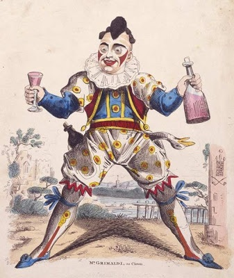
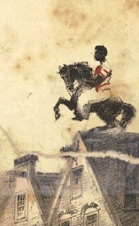
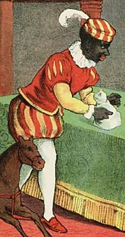
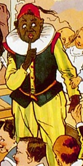
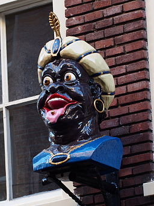
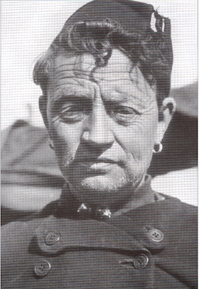
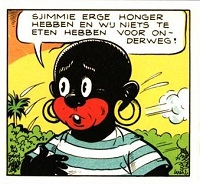

De kleding van Zwarte Piet

De eerste clown zoals we die nu ook nog kennen, met een wit opgemaakt gezicht en grote rode lippen, Grimaldi (zie afbeelding uit de 18e eeuw), droeg een pak dat was afgeleid van dat van de Harlekein of de Hofnar, en die kleding is een mengelmoes van kledingstijlen. Zo zijn de pofbroeken en kousen kenmerkend voor pages, maar die droegen geen uitbundige kragen. Omdat de Zwarte Piet vaak een soort clown uithangt maar ook werkt aan het hof van Sinterklaas, draagt hij ongeveer dezelfde kleding. Pages droegen echter nooit zo'n grote kraag, clowns wel.
De molensteenkraag
De kenmerkende molensteenkraag was in de 16e eeuw mode aan het Spaanse hof en de gegoede burgerij. Omdat de Nederlanden toen onder sterke invloed van Spanje stonden werd deze mode overgenomen. Omstreeks 1630 werden er meer platte kragen gedragen.
Evolutie van de kleding van de knecht
Sint Nicolaas had voor 1850 soms wel en soms niet één of meer metgezellen. Per streek verschilde dat nogal eens. Er bestond toen nog niet een nationaal georganiseerd feest en zodoende besliste men op lokaal niveau hoe het feest gevierd moest worden. In afgelegen streken in Europa kan je nog terugzien hoe de metgezellen van Sint Nicolaas zich meestal kleedden. Dat varieert nogal: er liepen zowel demonen in plompen als bisschoppen naast Sint Nicolaas. De Duitse Knecht Ruprecht is de bekendste metgezel van Sint Nicolaas buiten de grenzen.
Onderstaande afbeelding uit het Rijksmuseum stamt uit ± 1790 en toont een blanke knecht van Sint Nicolaas in een kapiteinspak.
Onderstaande afbeelding uit het Rijksmuseum stamt uit ± 1790 en toont een blanke knecht van Sint Nicolaas in een kapiteinspak.
Een van de boeken die van invloed is geweest op het uiterlijk van Zwarte Piet is het boek "Sint-Nicolaas en zijn knecht" door J.Schenkman.
Van dit boek zijn meerdere versies verschenen die je hier allemaal kunt lezen. De eerste versie van dit boek, verschenen in 1850, toont een knecht met een Indische harembroek en kledij die overeenkomsten heeft met Saraceense bedienden. De daarop volgende versies, die verschenen in het begin van de 20e eeuw, tonen de knecht in kleding die meer overeenkomsten heeft met de Zwarte Piet zoals we die nu kennen.
Van dit boek zijn meerdere versies verschenen die je hier allemaal kunt lezen. De eerste versie van dit boek, verschenen in 1850, toont een knecht met een Indische harembroek en kledij die overeenkomsten heeft met Saraceense bedienden. De daarop volgende versies, die verschenen in het begin van de 20e eeuw, tonen de knecht in kleding die meer overeenkomsten heeft met de Zwarte Piet zoals we die nu kennen.



De oorringen van Zwarte Piet
Oorbellen en oorringen zijn er in de geschiedenis gedragen door zo'n beetje iedereen, in alle tijdperken en streken. Zelfs de Europese mummie Ötzi droeg er eentje 5300 jaar geleden.
Zoals je in de afbeeldingen hierboven kan zien droegen de knechten van Sint Nicolaas geen oorringen in de boekjes van Schenkman. Er verschenen echter veel meer boekjes met afbeeldingen van Zwarte Piet, die weer door andere illustratoren werden getekend, maar dan vooral na 1900. De vroegere illustratoren van deze boekjes lieten zich waarschijnlijk inspireren door het uiterlijk van de gapers, zoals die al sinds de 16e eeuw boven drogisterijen hingen. De gaper hieronder hangt al sinds de 17e eeuw boven de drogisterij aan de herenstraat in Amsterdam, waar Schenkman woonde en leefde. Gapers dienden om aan te tonen dat de drogisterij veel exotische waren verkocht, waaronder de kruiden die in kruidnootjes zitten. Veel gapers hadden exotische kleding. Het waren doorgaans afbeeldingen van moorse handelaren. En aangezien Zwarte Piet ook wel als een moor werd gezien, werden ze net als de oude moorse gapers afgebeeld met oorringen.
Gouden oorringen werden daarnaast ook gedragen door vissers en andere zeelui, zoals de afbeelding hieronder van een Urker visser. De gouden oorring diende om de kosten te dekken van een grafkist van een verdronken visser, in het geval deze zou aanspoelen op een strand.
Oorringen werden natuurlijk ook gewoon gedragen als sieraad. De derde afbeelding toont niemand minder dan de 16e eeuwse schrijver William Shakespeare, waar dichtpiet een enorme bewondering voor heeft. Misschien is dat wel de reden dat sommige Zwarte Pieten gouden oorringen dragen?
Tegenstanders van Zwarte Piet proberen van de oorring een wel heel ver gezochte link naar slavernij te leggen, die er niet is. Ten eerste droegen slaven nooit oorbellen van goud. Het is wel zo dat sommige slavenhouders met behulp van oorringen hun 'bezit' markeerden, maar dat was geenszins gangbaar. Dergelijke oorringen waren nooit van goud. De slavenarmband was aanzienlijk populairder, en die worden nu door iedereen gedragen, behalve door Zwarte Pieten. Daarnaast verschenen de eerste afbeeldingen van Zwarte Piet met gouden oorringen ruim na het afschaffen van de slavernij, in de jaren 20 van de 20e eeuw. De gouden oorring is dus eerder een verwijzing naar het feit dat Zwarte Piet een vrij man is dan een slaaf. Het is beschamend dat sommige mensen inmiddels zo ver doorgedraven zijn in hun obsessie dat ze zelfs aan een volkomen onschuldig sieraad als een gouden oorring slavernij hebben weten te koppelen.
Tenslotte een afbeelding van Sjimmie, het vriendje van Sjors, uit 1960. Tegenwoordig wordt dit als een stereotypische afbeelding van een Afrikaan gezien. Thans draagt Sjimmie geen oorringen meer. Hier een documentaire over hoe Sjimmie zich door de jaren heen heeft ontwikkeld.
Dat de gouden oorring afkomstig zou zijn van dergelijke afbeeldingen van vooroorlogse Afrikanen is beter te verdedigen. Maar dan nog. Is het niet een persoonlijke keus om je te identificeren met een stereotype uit een ver verleden? Wie zoekt met Google images naar een tekening van een nederlander krijgt dit te zien. Zijn er nog bakras die zich identificeren met een ouderwets boertje op klompen?
Zoals je in de afbeeldingen hierboven kan zien droegen de knechten van Sint Nicolaas geen oorringen in de boekjes van Schenkman. Er verschenen echter veel meer boekjes met afbeeldingen van Zwarte Piet, die weer door andere illustratoren werden getekend, maar dan vooral na 1900. De vroegere illustratoren van deze boekjes lieten zich waarschijnlijk inspireren door het uiterlijk van de gapers, zoals die al sinds de 16e eeuw boven drogisterijen hingen. De gaper hieronder hangt al sinds de 17e eeuw boven de drogisterij aan de herenstraat in Amsterdam, waar Schenkman woonde en leefde. Gapers dienden om aan te tonen dat de drogisterij veel exotische waren verkocht, waaronder de kruiden die in kruidnootjes zitten. Veel gapers hadden exotische kleding. Het waren doorgaans afbeeldingen van moorse handelaren. En aangezien Zwarte Piet ook wel als een moor werd gezien, werden ze net als de oude moorse gapers afgebeeld met oorringen.
Gouden oorringen werden daarnaast ook gedragen door vissers en andere zeelui, zoals de afbeelding hieronder van een Urker visser. De gouden oorring diende om de kosten te dekken van een grafkist van een verdronken visser, in het geval deze zou aanspoelen op een strand.
Oorringen werden natuurlijk ook gewoon gedragen als sieraad. De derde afbeelding toont niemand minder dan de 16e eeuwse schrijver William Shakespeare, waar dichtpiet een enorme bewondering voor heeft. Misschien is dat wel de reden dat sommige Zwarte Pieten gouden oorringen dragen?
Tegenstanders van Zwarte Piet proberen van de oorring een wel heel ver gezochte link naar slavernij te leggen, die er niet is. Ten eerste droegen slaven nooit oorbellen van goud. Het is wel zo dat sommige slavenhouders met behulp van oorringen hun 'bezit' markeerden, maar dat was geenszins gangbaar. Dergelijke oorringen waren nooit van goud. De slavenarmband was aanzienlijk populairder, en die worden nu door iedereen gedragen, behalve door Zwarte Pieten. Daarnaast verschenen de eerste afbeeldingen van Zwarte Piet met gouden oorringen ruim na het afschaffen van de slavernij, in de jaren 20 van de 20e eeuw. De gouden oorring is dus eerder een verwijzing naar het feit dat Zwarte Piet een vrij man is dan een slaaf. Het is beschamend dat sommige mensen inmiddels zo ver doorgedraven zijn in hun obsessie dat ze zelfs aan een volkomen onschuldig sieraad als een gouden oorring slavernij hebben weten te koppelen.
Tenslotte een afbeelding van Sjimmie, het vriendje van Sjors, uit 1960. Tegenwoordig wordt dit als een stereotypische afbeelding van een Afrikaan gezien. Thans draagt Sjimmie geen oorringen meer. Hier een documentaire over hoe Sjimmie zich door de jaren heen heeft ontwikkeld.
Dat de gouden oorring afkomstig zou zijn van dergelijke afbeeldingen van vooroorlogse Afrikanen is beter te verdedigen. Maar dan nog. Is het niet een persoonlijke keus om je te identificeren met een stereotype uit een ver verleden? Wie zoekt met Google images naar een tekening van een nederlander krijgt dit te zien. Zijn er nog bakras die zich identificeren met een ouderwets boertje op klompen?


